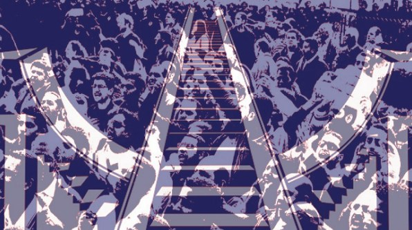
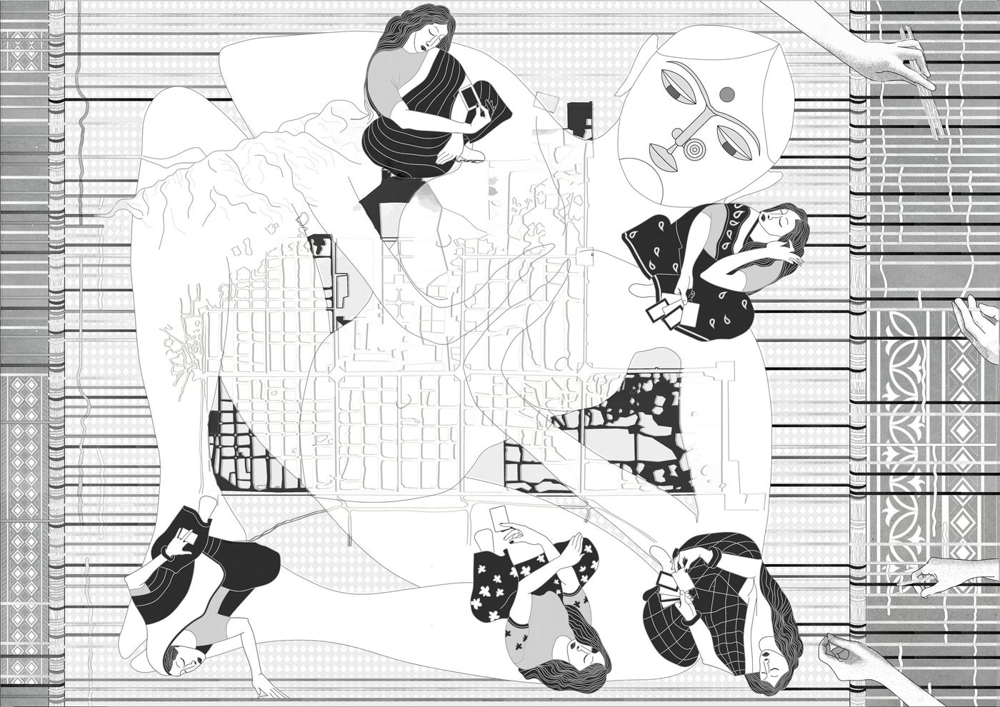
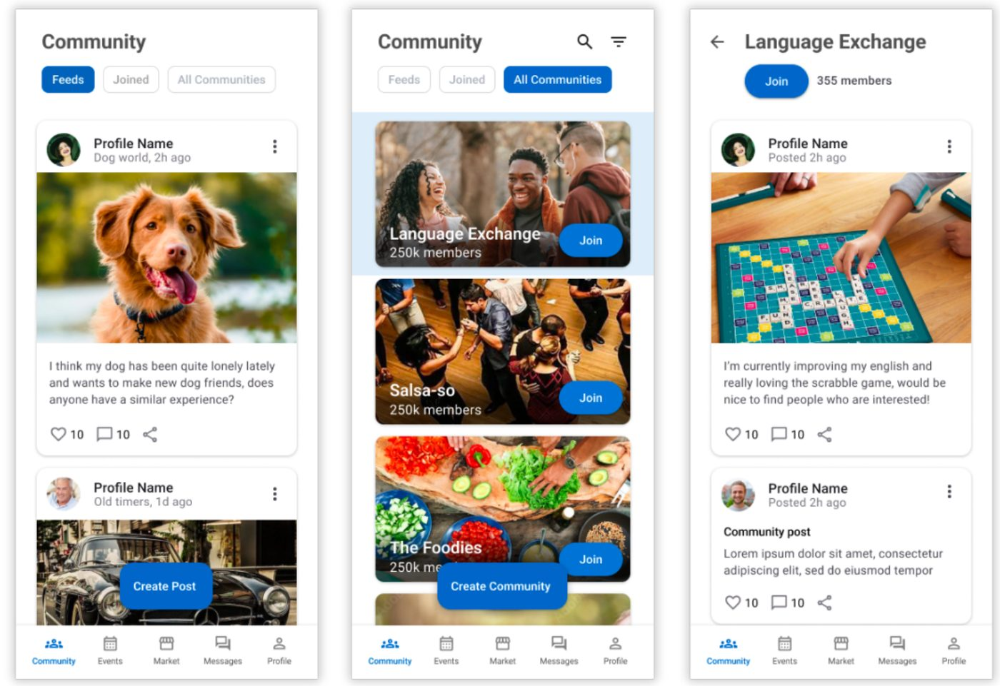

Varun Sangani
design + research
Spatialising Protests
Perceiving the role of urban public spaces in the culture of dissent in New Delhi, India

Themes
Urban public space · Social encounters · Collective behaviour · Qualitative research · Space syntax
Question
How can a city support or inhibit protest through its spatial characteristics? And how did Jantar Mantar become the “protest square” of India’s capital?
Method
I traced how Delhi’s protest sites moved from the old city to Lutyens’ Delhi, using historical maps and secondary literature. I then compared two sites, Jantar Mantar and the Boat Club Lawns, with space syntax analysis (visibility graph and agent-based analysis), site photographs from January 2021 and informal conversations. The work is qualitative.
What I found
Governments have repeatedly moved the official protest site farther from the political centre: first from the Boat Club to Jantar Mantar, after a mass farmers’ occupation in 1988.
The two sites shape crowds differently. Jantar Mantar sits among small blocks and alleys, so a crowd spills into the streets and is hard to contain. The Boat Club has large blocks and few entrances, so the crowd is bounded and easier to control. Symbolic value draws people in, but the surrounding street layout shapes how the crowd behaves and how the state responds.
I also drew four ways people occupy space when they protest: occupy, monument, agora and shelter.
What I would do next
The thesis calls its findings a preliminary step. The next step is to watch how people actually use these spaces, not only how the maps describe them.
Investigating the challenges of Agile Project Management at RWE
Themes
Human-computer interaction · Qualitative research · Interviews · Thematic analysis · Collaboration and organisational culture
Question
What challenges come up when a large German energy company adopts Scrum, and which structural and cultural factors push teams back to plan-driven ways of working?
Method
An embedded single-case study at RWE with nine semi-structured interviews: developers, solution managers, a product owner, UX/UI designers and a team lead. We coded the transcripts together using reflexive thematic analysis, and grouped the results at management, team and individual level. We treated recordings as personal data under GDPR and masked names, projects and dates.
What we found
Many teams ran Scrum events but kept top-down decision-making: Agile on paper. Scope changed mid-Sprint, approvals arrived after work was marked done, and roles and coaching were unclear. Teams doing feature work and interrupt-driven work in the same Sprint often fit Kanban better than Scrum.
Agile lasts when governance, funding and compliance move at the same pace as iteration, and when leaders back team autonomy and learning.
Limits
One organisation, nine interviews, and no delivery metrics or direct observation of ceremonies, so the findings should be transferred with care.
Stri Mandala

Themes
Speculative design · Gender-inclusive public space · Right to the city · Urban futures · Visual critique
Reading the title
स्त्री (strī) is the Sanskrit and Hindi word for “woman”. मण्डल (maṇḍala) means “circle”. A mandala is a geometric, circular or square design that stands for the universe, wholeness and spiritual balance in Hinduism, Buddhism and Jainism. So the title reads “circle of women”: women as the centre that holds a city together.
Brief
The competition “rip. mix. burn.” asked entrants to use drawing to critique the existing city and reimagine the future city. We chose to ask what kind of space supports a woman’s growth as an individual, within a community and in a progressive society, and to argue for gender-inclusive public space.
What the drawing shows
The map of Jaipur is drawn as a rug. Women sit around it, weaving it. Jaipur is known for its hand-made rugs, so the drawing also shows the fine detail and patterns of that craft. The idea is that women have woven many Indian cities through their work, and that this contribution is rarely recognised. The map is the fabric, and the weavers are the ones who made it.
Why a drawing
The drawing does not predict a future. It asks who a city is made by and for, and it makes the answer visible: the right to the city is shaped by gender, and the people shaping it are often not seen. I see this as a first step toward speculative design: a deliberately imagined scene that makes a social question easy to discuss.
Wetterbank
Wetterbank is a fictional smart bench that starts conversations between strangers. It uses the one topic Germans never seem to run out of, the weather, and leads people from there to each other’s names.
Gefällt 1.204 Personen
7:42. Rain. Dead silence. Until the bench takes the floor.
Gefällt 873 Personen
File a complaint, form 38b. We’ll forward it. To whom, we won’t say. Grumbling is a civic duty.
Gefällt 2.311 Personen
From weather to first names in three steps. The informal “du” is offered only after 20 minutes.
Themes
Design fiction · Smart street furniture · Social encounters · Small talk · Humour as critique
Question
When a machine takes over the safest opener in German small talk, does it help strangers get past the weather, or does it replace the awkward step?
The real starting point
Germans talk about the weather a lot: 62% do so several times a week or more, 29% daily, and only 4% never (YouGov, 3,290 adults, April 2026). It is also the most accepted small-talk topic, at 70% (Babbel/YouGov, 2025). Yet 48.5% of 18–24-year-olds find small talk uncomfortable, and 18–29-year-olds carry the highest loneliness burden (14.1% in 2021, Einsamkeitsbarometer 2024).
My reading: the opener is easy, the step after it is hard. Wetterbank is built for that step. I found no survey on how often Germans complain about the weather, so that mode takes the stereotype at its word. Either nobody has asked, or the respondents complained about the survey.
Sources: YouGov, t-online / Babbel, Einsamkeitsbarometer 2024
The idea
The bench has three modes, each one step further from the safe topic:
- Wetter (weather) – the bench opens with the safest line there is, a remark about the weather.
- Meckern (complaining) – it takes complaints about the weather and “forwards” them, so grumbling together becomes a small bond.
- Namen (names) – it drops the weather and asks for a name, pushing strangers one step further.
What it asks: does a bench that speaks first make it easier to talk to strangers, or does it do the awkward part for us? Is a bench asking for your name friendly or nosy? And what happens when someone sells you the first sentence?
Wetterbank®
Die Bank, die immer etwas zu sagen hat.
The bench that always has something to say.
Über uns (about us)
Wetterbank GmbH ist ein Düsseldorfer Unternehmen für sprechende Straßenmöbel. Gegründet 2031 nach einer Straßenbahnverspätung, in der 40 Minuten lang niemand ein Wort sagte.
Wetterbank GmbH, Düsseldorf, founded 2031 after a 40-minute tram delay in which nobody said a word.
Online-Auftritt (our website) Interaktiv
Probieren Sie es aus: Beschwerde über das Wetter eintippen, Enter drücken. (Try it: type a complaint about the weather and press Enter.)
You cannot be near a bench all the time, so this website shows how the bench would respond. It is Datenschutz-safe: nothing you type is sent or stored.
© 2031 Wetterbank GmbH · Alle Rechte vorbehalten, Wetter ausgenommen. (All rights reserved, weather excepted.)
Next steps
Before building anything I would talk to people. How do you start a chat with someone you don’t know? How often do you talk about the weather, and do you moan about it? The answers would show whether Meckern is a real habit or just a stereotype, and they would rewrite the bench’s lines.
Then I would stage it. Actors, maybe a theatre group, play the bench and the strangers at a made-up tram stop, and we talk afterwards about what worked, what fell flat and what the bench should never say. It is a method from performative and speculative design: a rehearsal teaches a lot before any hardware exists, including what a talking bench does to the people around it.
Last comes a real bench at a real stop, tried out with real people. I want to know one thing: does anyone get past the weather, and if so, was it their idea or the bench’s?
Limits
This is a design fiction, not a study. I have not tested it with anyone yet, and the numbers describe weather talk in general, not benches.
The next step is its own home: Wetterbank is growing into a website and an app, which you can follow at va3runs.github.io/wetterbank. And if you want to talk about the weather first, write to me.
KaLink

Themes
Social connection · Urban community · Language and cultural barriers · Human-centred design · Qualitative research
Question
How do international students and long-time residents of Kamp-Lintfort interact, and what keeps the two groups apart?
Method
We ran eight semi-structured interviews with students, university staff and residents aged 20 to 48, and analysed them with inductive thematic coding. From this we built four personas and ran four open card-sorting sessions. We then tested a clickable prototype with six participants, and a revised version with ten, using think-aloud sessions.
What we found
Students and residents lived in separate channels: separate WhatsApp and Facebook groups, so information about events rarely crossed from one group to the other. The language barrier sat underneath this. One student told us: “The other international students are in the same situation so we gather together, and I feel the locals have their whole life set here and I am an intruder.”
Both groups wanted shared events and ways to exchange goods and help. Out of this we designed an app with three parts: a community space, events and a marketplace. Participants in both rounds of testing received it positively.
Limits
We did not include older residents in the card sorting, the prototype is not fully functional, and we did not test whether the app would bring people together in practice.
What it opened up
The interviews were about more than an app. They were about how people from separate groups come to share a place. That is the question I would like to pursue beyond the screen.
About
[Who you are and what you are curious about, in your own words. Your path runs from architecture to HCI to spatial and communication design: say what question connects those steps.]
CV
Experience
- Communication and Spatial Designer at Planwerkstatt09/2024 – presentBedburg-Hau, Germany
- Academic Tutor to Prof. Dr. Kai Essig10/2024 – 09/2025Hochschule Rhein-Waal, Kamp-Lintfort, GermanyModules of UX psychology and human-computer interaction
- Designer and Design Intern, India06/2019 – 05/2023ADA Studio, SSDesignStudio, CSA and The Red Studio
Education
- Master of Science in Usability Engineering (HCI)10/2023 – 09/2025Hochschule Rhein-Waal, Kamp-Lintfort, GermanyGrade: 1,5 (German grading scale)
- Bachelor of Architecture in Urban Design and Architecture09/2016 – 05/2022Navrachana University, Vadodara, India
For more detail, see my full CV [link added once the CV is uploaded]
Contact
Impressum
Responsible for this website
Varun Sangani
Düsseldorf, Germany
Contact
Email: varuns@ik.me
Responsible for content
According to § 18 para. 2 MStV: Varun Sangani, contact as above.
Links to other websites
This site links to external pages. I have no influence on their content and am not responsible for it. I checked the links when I added them, and I will remove a link if I learn that the page it leads to breaks the law.
Copyright
The texts and images on this site, including the project drawings and figures, are mine or made together with the people named on each page. Please ask before you reuse them.